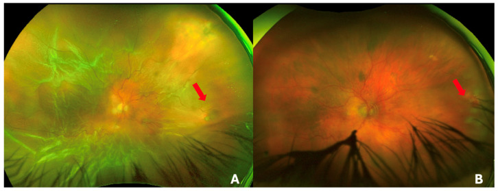
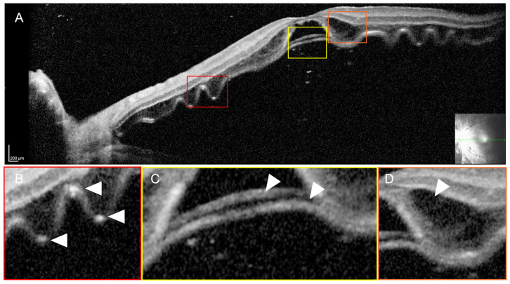
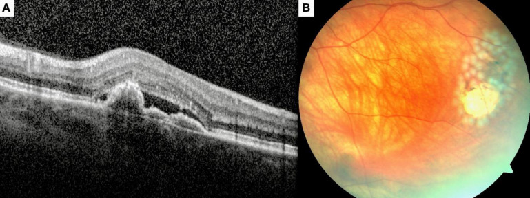

1469 — Bong võng mạc có lỗ sau tiêm nội nhãn / Rhegmatogenous retinal detachment after intravitreal injection (IVARD)
Tags: pattern:bong-vong-mac pattern:lo-rach-vong-mac pattern:dich-duoi-vong-mac pattern:co-keo-pvr pattern:tiem-noi-nhan pattern:bien-chung vung:vong-mac vung:hoang-diem vung:dich-kinh score:PVR protocol:OCT protocol:widefield protocol:sieu-am-B-scan protocol:PPV incidentaloma:khong
Mức chắc chắn (certainty): tổng hợp y văn (literature synthesis) — dựng từ đoàn hệ 52 mắt/52 bệnh nhân ở 2 trung tâm châu Âu (Graefes Arch Clin Exp Ophthalmol 2021, PMC8589788, CC BY 4.0), tổng quan hình ảnh tiền phẫu bong võng mạc bong hoàng điểm (Diagnostics 2026, PMC13256988, CC BY 4.0), ca lỗ rách 7 tuần sau mũi tiêm thứ 8 (Med Hypothesis Discov Innov Ophthalmol 2026, PMC13135659, CC BY-NC) và ca bong võng mạc hoàng điểm trên vết rách hình thoi (Cureus 2026, PMC13088649, CC BY 4.0). Nhóm không có bệnh nhân của mình; chỗ chưa đủ chắc ghi "chưa rõ". Không ghi tên tác giả — attribution dùng tạp chí + năm + PMCID.
Câu chốt: Bong võng mạc có lỗ sau tiêm nội nhãn (IVARD) hiếm nhưng là biến chứng mù không hồi phục, và điều nguy hiểm nhất là bị quy cho "nhá đèn do tiêm" rồi khám lại muộn. Ba con số phải thuộc: (1) tỉ lệ ~0,02%/mũi với anti-VEGF (95% CI 0,010–0,037) nhưng 0,134%/mũi với implant dexamethasone (95% CI 0,044–0,312) — cao gấp ~6,7 lần; (2) trong 52 mắt IVARD, 63,5% (33/52) đã bong hoàng điểm khi đến viện, triệu chứng trung bình 6,5 ± 7,8 ngày; (3) mổ một lần dính 83%, lần hai 96%, nhưng PVR gặp 8/9 mắt có implant dexamethasone và thị lực cuối vẫn kém vì bệnh hoàng điểm nền. Chẩn đoán không nằm ở OCT mà ở soi đáy mắt có ấn sclera tìm lỗ rách — OCT chỉ trả lời "hoàng điểm còn dính hay không".
1. Tổng quan bệnh học – cơ chế hình ảnh
1.1 TẠI SAO một mũi tiêm 30 G lại gây bong võng mạc
- Đường kim là đường vào của lỗ rách: kim 30–31 G (đường kính ngoài ~0,3 mm) xuyên 3,5–4,0 mm sau rìa giác mạc, tức là qua pars plana vào thẳng vùng đáy (ora serrata) – võng mạc ngoại vi. Ba cơ chế:
- Rách trực tiếp: đầu kim chạm võng mạc ở mắt nhãn cầu nhỏ, mắt đã cắt dịch kính trước đó, hoặc võng mạc sa ra trước (không có dịch kính đỡ) → lỗ tại chỗ tiêm.
- Giam giữ dịch kính (vitreous incarceration): sợi dịch kính bị kéo vào vết kim, tạo dây co kéo cố định vào lỗ; dòng dịch qua lỗ duy trì bong.
- Khơi phát PVD: thay đổi thể tích/áp lực trong nhãn cầu có thể làm bong dịch kính sau (PVD) đột ngột ở mắt còn dịch kính → rách hình móng ngựa ở vùng hoàng điểm/ngoại vi.
- Vì sao dexamethasone implant nguy hiểm hơn: implant 0,7 mg dùng kim 22 G (lớn hơn hẳn 30 G) và đưa dụng cụ cứng vào pars plana; đồng thời corticoid tại chỗ ức chế lành vết thương và thúc đẩy PVR. Trong đoàn hệ: 8/9 mắt nhận DEX có PVR (PMC8589788).
- Vì sao cận thị nặng là nền quan trọng: 13/52 (25%) mắt có cận thị > 6 D — võng mạc mỏng, thoái hóa dạng lưới, vùng ora xa hơn; không chứng minh được nhân quả với mũi tiêm, nhưng đây là nhóm phải khám kỹ trước và sau tiêm.
1.2 TẠI SAO hình ảnh trông như vậy (vật lý OCT – siêu âm – đáy mắt)
- Soi đáy mắt/ảnh wide-field — vì sao võng mạc bong lại "trắng đục": võng mạc bong khỏi biểu mô sắc tố mất nguồn nuôi từ hắc mạc, các tế bào thần kinh phù nội bào → võng mạc mất trong suốt, trắng xám, mất hình ảnh mạch hắc mạc bên dưới; bề mặt gấp nếp (corrugated). Lỗ rách là vùng đỏ vì nhìn thấy hắc mạc qua lỗ, bờ cuộn tròn (rolled edge). Đây là lý do ảnh wide-field là chuẩn để đánh giá mức lan, còn OCT không thấy được lỗ ngoại vi.
- OCT — vì sao dịch dưới võng mạc "đen": OCT dùng giao thoa ánh sáng có độ kết hợp thấp, đo hồi phản xạ với độ phân giải trục 5–7 µm. Dịch dưới võng mạc là nước trong → không phản xạ → khoang giảm tín hiệu (hyporeflective); võng mạc bong nằm phía trên như dải tăng phản xạ liên tục. Trong bong hoàng điểm mạn/áp lực cao, OCT thấy:
- nếp gấp võng mạc ngoài (outer retinal corrugations — ORC): các nếp của lớp hạt ngoài;
- bong lớp thanh mạch (bacillary layer detachment): tách ngay trên đường nối đoạn trong–đoạn ngoài tế bào cảm quang do dịch áp lực;
- nang trong võng mạc và màng trước võng mạc. Ba dấu này dự báo phục hồi thị lực kém hơn dù mổ dính (PMC13256988).
- Vì sao OCT không thay được soi đáy mắt: OCT chỉ chụp hoàng điểm và cực sau; lỗ rách sau tiêm thường ở vùng tiêm ngoại vi. Vì vậy "OCT hoàng điểm bình thường" không loại trừ bong võng mạc ngoại vi — đây là cạm bẫy hay gặp nhất.
- Siêu âm B-scan — khi đục môi trường: đầu dò 10 MHz cho hình cắt 2 chiều; võng mạc bong là màng tăng âm dày, liên tục với đĩa thị hai đầu, di động khi mắt đảo; màng dịch kính mỏng hơn, tăng âm kém, ít dính đĩa; bong hắc mạc có hình vòm, không dính đĩa thị, thường kèm nhãn áp thấp.
1.3 Ngưỡng định lượng nằm lòng
| Chỉ số | Ngưỡng / giá trị | Nguồn |
|---|---|---|
| Tỉ lệ IVARD — anti-VEGF | 0,02%/mũi (95% CI 0,010–0,037); y văn lớn ~0,013% | PMC8589788 |
| Tỉ lệ IVARD — implant dexamethasone | 0,134%/mũi (0,044–0,312); chênh +0,114% so với anti-VEGF (p = 0,0001) | PMC8589788 |
| Số mũi trước khi bong | trung bình 4,3 ± 5,0 (1–26) | PMC8589788 |
| Khoảng cách mũi cuối → bong | trung bình 11,2 ± 14,3 tháng (0–60) — nguy cơ tích lũy, không chỉ vài ngày | PMC8589788 |
| Thời gian triệu chứng → mổ | trung bình 6,5 ± 7,8 ngày (1–30) | PMC8589788 |
| Hoàng điểm còn dính khi đến | 19/52 (36,5%) — đến sớm hơn: 2,6 ± 1,5 ngày vs 8,7 ± 9,0 ngày ở nhóm bong hoàng điểm | PMC8589788 |
| Cận thị > 6 D | 13/52 (25%) | PMC8589788 |
| Kết quả giải phẫu | dính sau 1 mổ 83% (43/52); sau 2 mổ 96% (50/52) | PMC8589788 |
| PVR | 8/9 mắt nhận DEX; 3/3 mắt viêm màng bồ đào | PMC8589788 |
| Thị lực cuối | cải thiện 28, không đổi 16, xấu đi 8/52 | PMC8589788 |
2. Mẫu hình + chẩn đoán phân biệt theo vị trí (gamut)
- Mẫu hình (pattern): dịch dưới võng mạc + võng mạc trắng đục, gấp nếp ở một phần hoặc toàn bộ võng mạc, có lỗ rách (thường ngoại vi, vùng tiêm), mất vùng nhìn tương ứng; kèm mảnh dịch kính hoặc xuất huyết nhẹ ở đáy.
- Gamut theo vị trí:
- Vùng tiêm (3,5–4,0 mm sau rìa, thường 8–10 giờ hoặc 2–4 giờ): lỗ do kim — vị trí hay bị bỏ sót nhất vì nằm sát ora, khó thấy nếu không ấn sclera.
- Vùng hoàng điểm/thái dương trên: rách hình móng ngựa do PVD; hay bong hoàng điểm sớm.
- Vùng dưới (6 giờ): bong thấp, khu trú, dễ bị bỏ qua khi bệnh nhân nằm.
- Toàn bộ võng mạc: bong hình phễu, PVR — tiên lượng xấu, cần dầu silicone.
- Gamut theo cơ chế (mnemonic "LỖ – THANH DỊCH – CO KÉO – TÁCH LỚP – HẮC MẠC"):
- LỖ (rhegmatogenous): IVARD, rách do PVD, lỗ teo ở cận thị/lattice, lỗ do chấn thương.
- THANH DỊCH (exudative): bệnh hoàng điểm tân mạch (nAMD) đang điều trị, CSCR, viêm màng bồ đào, u nội nhãn — không có lỗ.
- CO KÉO (tractional): đái tháo đường tăng sinh, võng mạc sinh non, PVR — màng co kéo, không lỗ (hoặc lỗ do co kéo).
- TÁCH LỚP (schisis): bong võng mạc bẩm sinh/cận thị — tách trong võng mạc, không có dịch dưới võng mạc thật.
- HẮC MẠC (choroidal detachment): sau mổ, nhãn áp thấp, viêm — vòm, không dính đĩa thị.
3. Bảng so sánh phân biệt (ma trận đối chiếu)
| Thực thể (entity) | Hình ảnh điển hình | Chốt vào (rule-in) | Chốt loại (rule-out) | Gợi ý xác nhận |
|---|---|---|---|---|
| IVARD (bong có lỗ sau tiêm) | Võng mạc trắng đục gấp nếp, lỗ rách ngoại vi, dịch dưới võng mạc; OCT hoàng điểm bong/còn dính | Tiền sử tiêm nội nhãn + lỗ rách thấy được khi ấn sclera + dịch dưới võng mạc; triệu chứng nhá đèn/màng che | Không có lỗ, dịch khu trú quanh tổn thương hoàng điểm, không lan ngoại vi → không phải RRD | Soi đáy mắt giãn đồng tử + ấn sclera; wide-field; B-scan nếu đục |
| Bong thanh dịch do thuốc/bệnh nền (exudative) | Dịch dưới võng mạc nhẵn, vòm, không lỗ, có CNV/viêm bên dưới; dịch di chuyển theo tư thế | Không tìm được lỗ + bệnh nền hoàng điểm đang hoạt động; đáp ứng anti-VEGF/corticoid | Có lỗ rách hoặc võng mạc gấp nếp lan rộng → RRD | OCT (CNV, dịch), FA/ICGA nếu cần; theo dõi 4–8 tuần |
| Bong co kéo (TRD) | Màng xơ mạch co kéo, võng mạc hình lều, dính chắc, không lỗ hoặc lỗ trong vùng xơ | Đái tháo đường tăng sinh/xuất huyết dịch kính cũ + màng co kéo | Có lỗ rách đơn độc + dịch lan tự do → RRD | Siêu âm + OCT; đánh giá màng trước võng mạc |
| Tách lớp võng mạc (retinoschisis) | Tách trong võng mạc, bề mặt nhẵn, không dịch dưới võng mạc, thường cận thị nặng | Tách lớp trong + không lỗ + thị trường ổn định nhiều năm | Có lỗ + dịch dưới võng mạc thật → RRD | OCT (tách lớp), soi đáy mắt; theo dõi |
| Bong hắc mạc | Vòm nhẵn, không dính đĩa thị, nhãn áp thấp, tiền phòng nông | Nhãn áp thấp + vòm hắc mạc + không dính đĩa | Dính đĩa thị hai đầu + gấp nếp → võng mạc | B-scan; đo nhãn áp |
| Xuất huyết dịch kính | Đỏ đục, không thấy võng mạc, B-scan có hạt lơ lửng | Máu trong dịch kính + không màng | Có màng tăng âm dính đĩa → bong võng mạc | B-scan; theo dõi tan máu |
| Viêm nội nhãn sau tiêm | Mủ tiền phòng, viêm dịch kính, đau tăng; có thể kèm bong | Đau + giảm thị lực nhanh + mủ tiền phòng ngày 3–7 sau tiêm | Không đau, không mủ, chỉ nhá đèn → nghĩ bong | Chọc dịch kính/cấy; B-scan; xem 1425 |
- Ảnh ghép đối chiếu: không tạo composite — ảnh từ 2 bài khác nhau, khác bệnh nhân và khác modality; ghép sẽ làm mất chú giải gốc (CC BY-NC phải giữ nguyên bản).
4. Protocol chụp + hệ phân độ/điểm chuẩn hóa
4.1 Protocol trước – trong – sau tiêm
- Trước tiêm: đo thị lực, nhãn áp; soi đáy mắt giãn đồng tử ghi nhận lattice, lỗ teo, vùng thoái hóa, tiền sử bong mắt bên kia; OCT hoàng điểm nếu có bệnh hoàng điểm. Cận thị > 6 D và mắt đã cắt dịch kính/pseudophakia là nhóm ghi chú riêng.
- Khi tiêm: đánh dấu 3,5–4,0 mm sau rìa (giác mạc trong), tránh vùng có lỗ/thoái hóa nhìn thấy; không qua vùng pars plana có mảnh dịch kính; dùng kim 30–31 G cho anti-VEGF, 22 G cho implant DEX (đường vào lớn hơn — cảnh báo bệnh nhân).
- Ngay sau tiêm: kiểm tra cảm nhận ánh sáng, nhãn áp, đáy mắt nếu bệnh nhân than nhìn mờ/nhá đèn; dặn rõ 4 dấu cần quay lại ngay: nhá đèn tăng, màng che/ruồi bay mới, mất vùng nhìn, đau tăng.
- Nhóm nguy cơ cao: khám lại 1–2 tuần (soi đáy mắt + OCT) — chưa có RCT chứng minh lịch này, nhưng đây là thực hành hợp lý vì 63,5% đến viện đã bong hoàng điểm (PMC8589788); ghi rõ "thực hành, bằng chứng mức thấp".
- Khi nghi bong: soi đáy mắt ấn sclera 360°, wide-field, OCT hoàng điểm (dính/bong), B-scan nếu đục môi trường; phân loại macula-on vs macula-off là bước quyết định thời gian mổ.
4.2 Phân độ và sơ đồ quyết định
- Phân loại thực hành quan trọng nhất: macula-on (hoàng điểm còn dính — mổ trong 24–72 giờ) vs macula-off (bong hoàng điểm — mổ sớm nhất có thể, trong vài ngày; chờ lâu làm mất tế bào cảm quang).
- PVR: phân độ theo Retina Society (I–IV) hoặc phân loại mới CP/CA; PVR nặng → cân nhắc PPV + dầu silicone thay vì khí.
- Chọn phẫu thuật: scleral buckle ± cryo cho lỗ nhỏ ngoại vi, không PVR, dịch kính còn; PPV + laser + khí/dầu cho lỗ lớn, PVR, bong hoàng điểm lâu, đục môi trường.
flowchart TD
A["Nhá đèn / ruồi bay / màng che sau tiêm nội nhãn"] --> B["Soi đáy mắt giãn đồng tử + ấn sclera 360°, wide-field"]
B --> C{"Thấy lỗ rách + dịch dưới võng mạc?"}
C -->|Không| D["OCT + B-scan: bong thanh dịch, tách lớp, bong hắc mạc, xuất huyết"]
D --> E["Điều trị theo nguyên nhân; theo dõi 1–2 tuần"]
C -->|Có| F["OCT hoàng điểm: macula-on hay macula-off"]
F -->|Macula-on| G["Mổ trong 24–72 giờ: buckle hoặc PPV + khí"]
F -->|Macula-off| H["Mổ sớm trong vài ngày: PPV + laser + khí/dầu"]
G --> I{"PVR nặng / DEX implant / tái phát?"}
H --> I
I -->|Có| J["PPV + dầu silicone, cân nhắc bóc màng"]
I -->|Không| K["Theo dõi OCT 1–4–12 tuần"]
- Vì sao DEX cần thận trọng hơn: 8/9 mắt nhận DEX có PVR trong đoàn hệ → khi bong ở mắt có implant DEX, đừng chọn khí đơn thuần nếu đã có dấu PVR; chuẩn bị tâm lý mổ lặp.
5. Biến thể bình thường và cạm bẫy
- "Nhìn mờ sau tiêm" không phải lúc nào cũng là bong: có thể do thuốc thoáng qua, bong dịch kính sau, xuất huyết nhẹ, tăng nhãn áp (xem 1465) — nhưng không được bỏ qua triệu chứng màng che/mất vùng nhìn.
- OCT hoàng điểm bình thường không loại trừ bong ngoại vi: ảnh OCT chỉ tới cực sau; lỗ ở vùng tiêm sát ora chỉ thấy khi ấn sclera hoặc wide-field.
- Cận thị nặng + lỗi B-scan: staphyloma sau tạo bờ cong giả "màng bong"; so sánh với đĩa thị và độ dày màng.
- Pseudophakia/aphakia: không có thể thủy tinh đỡ, lỗ ở ora dễ hình thành và khó thấy; cần soi 360° và hạ thấp ngưỡng chụp B-scan.
- Bong thanh dịch "tự hết" bị mổ oan: dịch dưới võng mạc quanh CNV nhẵn, không lỗ, có thể giảm sau anti-VEGF; mổ một võng mạc không rách làm mất thị lực và tạo rách thật.
- Đau tăng ngày 3–7 = viêm nội nhãn, không phải bong: phân biệt bằng mủ tiền phòng, viêm dịch kính; bong đơn thuần không đau.
- "Satisfaction of search" sau khi thấy một lỗ: rách có thể nhiều lỗ (đặc biệt cận thị/lattice) — luôn soi toàn bộ 360° trước khi quyết định chỉ buckle một vùng.
6. Tự lượng giá — Blind Quiz ngay trên trang tĩnh
Ca 1 — Nữ 72 tuổi, tiêm anti-VEGF mũi thứ 9 vì nAMD mắt trái; 4 ngày sau thấy màng che phía trên. Ảnh wide-field:

- Gợi ý lâm sàng: không đau, nhãn áp 14 mmHg, thị lực 20/200.
- Câu hỏi: Mô tả vùng bong? Có lỗ không? Ba chẩn đoán phân biệt? Dấu nào chốt?
Bấm để hiện đáp án (findings + chẩn đoán)
- Dấu hiệu: (A) võng mạc trắng đục, gấp nếp, bong ở nhiều góc phần tư, mất hình ảnh mạch hắc mạc dưới vùng bong, bờ bong rõ; (B) sau mổ võng mạc áp lại, thấy rõ mạch hắc mạc và sẹo laser.
- Chẩn đoán: bong võng mạc có lỗ (RRD), nhiều khả năng liên quan mũi tiêm — lỗ ở vùng tiêm/ngoại vi.
- Phân biệt: bong thanh dịch do nAMD (không lỗ, nhẵn), bong co kéo (màng xơ), bong hắc mạc (vòm, không dính đĩa).
- Chốt: tìm được lỗ rách khi ấn sclera + võng mạc gấp nếp lan rộng.
- Nguồn ảnh: Diagnostics 2026, PMC13256988, Fig. 3, CC BY 4.0 (nguyên bản).
Ca 2 — Nam 66 tuổi, bong võng mạc 6 ngày, OCT hoàng điểm trước mổ:

- Câu hỏi: Hoàng điểm còn dính hay đã bong? Ba dấu OCT trong ảnh là gì? Chúng nói gì về tiên lượng?
Bấm để hiện đáp án
- Dấu hiệu: dịch dưới võng mạc (giảm tín hiệu) dưới hoàng điểm = bong hoàng điểm; (B) nếp võng mạc ngoài (ORC); (C) bong lớp thanh mạch (bacillary layer detachment) — tách ngay trên đường nối đoạn trong–ngoài tế bào cảm quang; (D) nang trong võng mạc.
- Vì sao: dịch là nước trong nên không phản xạ; áp lực dịch tách lớp thanh mạch và gấp lớp hạt ngoài.
- Tiên lượng: ORC, BALAD và nang liên quan phục hồi thị lực kém hơn dù võng mạc dính; cần tư vấn trước mổ.
- Cạm bẫy: OCT này không cho biết lỗ ở đâu — vẫn phải soi đáy mắt 360°.
- Nguồn ảnh: Diagnostics 2026, PMC13256988, Fig. 1, CC BY 4.0 (nguyên bản).
Ca 3 — Nữ 57 tuổi, nAMD, sau mũi ranibizumab thứ 8 (7 tuần) thấy nhá đèn; ảnh OCT trước tiêm (A) và đáy mắt (B):

- Câu hỏi: Dấu hiệu ở (B)? Vì sao lỗ xuất hiện muộn 7 tuần sau tiêm? Cần làm gì tiếp?
Bấm để hiện đáp án
- Dấu hiệu: (A) OCT trước tiêm có bong biểu mô sắc tố + dịch dưới võng mạc (bệnh nAMD); (B) lỗ rách võng mạc cạnh vùng tăng sắc tố ở võng mạc thái dương ngoại vi, xung quanh có sẹo laser.
- Vì sao muộn: lỗ có thể do dây dịch kính bị giam ở vết kim co kéo dần, hoặc PVD tiến triển — không phải lúc nào cũng xảy ra ngay ngày đầu.
- Cần làm: soi đáy mắt 360° + ấn sclera, B-scan/OCT hoàng điểm, mổ (laser/buckle/PPV) theo vị trí và tình trạng hoàng điểm; theo dõi mắt còn lại.
- Phản biện: đây là ca đơn lẻ, không chứng minh nhân quả tuyệt đối giữa mũi tiêm và lỗ — nhưng thời điểm và vị trí phù hợp với IVARD.
- Nguồn ảnh: Med Hypothesis Discov Innov Ophthalmol 2026, PMC13135659, Fig. 5, CC BY-NC (nguyên bản, không chỉnh sửa).
Bài liên quan chéo
- 1465 – Tăng nhãn áp cấp sau tiêm nội nhãn (biến chứng ngay trong 30 phút; phân biệt với bong muộn vài ngày)
- 1425 – Viêm nội nhãn sau tiêm nội nhãn (đau + mủ tiền phòng; B-scan trước khi kết luận)
- 1402 – Bong võng mạc sau viêm nội nhãn (cơ chế lỗ hoại tử vs màng co kéo)
- 1865 – Bong võng mạc tái phát sau tháo dầu (PVR, laser 360°, chọn dầu/khí)
- 1875 – Phù hoàng điểm sau phacovitrectomy trên mắt bơm dầu (theo dõi hoàng điểm sau mổ)
- 411 – Siêu âm nhãn cầu (B-scan: màng bong vs màng dịch kính)
- 400 – Tổng quan Mắt & thị giác
Ảnh
- Tên file theo quy ước
1469_rrd_<Modality>_<PMCID>-f<so>.jpg; nguồn + giấy phép từng ảnh ởimages/CREDITS.md. - 2 ảnh từ Diagnostics 2026 (PMC13256988, CC BY 4.0); 1 ảnh từ Med Hypothesis Discov Innov Ophthalmol 2026 (PMC13135659, CC BY-NC) — tải từ PMC CDN, nguyên bản (không crop, không đổi nhãn).
Không dùng để chẩn đoán độc lập khi chưa có người hướng dẫn.